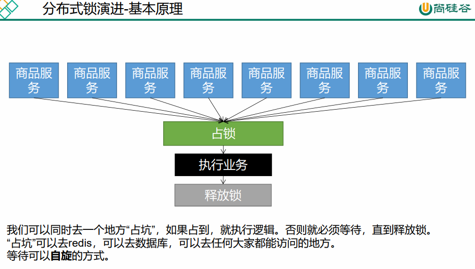
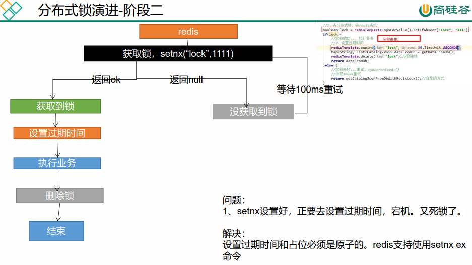
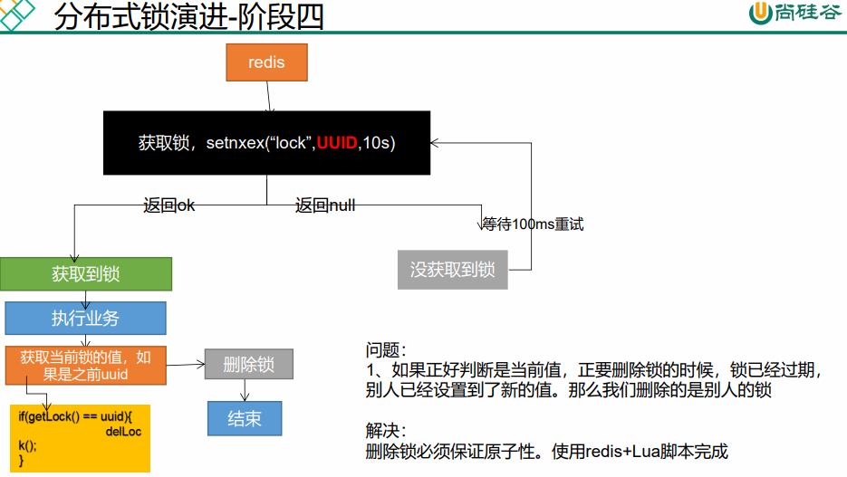

# 缓存
# 整合 Redis
- 添加依赖
- 简单配置
- 使用配置好的 Template
# 修改为 Redis 缓存后进行压力测试
报错：产生堆外内存溢出：OutOfDirectMemoryError
原因：springboot 2.0 默认使用 lettuce 作为操作 redis 的客户端。使用 netty 进行网络通信，lettuce 的 bug 导致 netty 堆外内存溢出，netty 如果没有指定堆外内存，则选择默认使用 idea 上面设置的 jvm 内存 - Xmx300m
解决方案：1、升级 lettuce 客户端。2、使用 jedis 客户端
改为 jedis
<dependency> | |
<groupId>org.springframework.boot</groupId> | |
<artifactId>spring-boot-starter-data-redis</artifactId> | |
<exclusions> | |
<exclusion> | |
<groupId>io.lettuce</groupId> | |
<artifactId>lettuce-core</artifactId> | |
</exclusion> | |
</exclusions> | |
</dependency> | |
<dependency> | |
<groupId>redis.clients</groupId> | |
<artifactId>jedis</artifactId> | |
</dependency> |
# 缓存穿透


解决：
- 空结果缓存：解决缓存穿透
- 设置过期时间（加随机值）：解决缓存雪崩
- 枷锁：解决缓存击穿
# 单体枷锁
public Map<String, List<Catelog2Vo>> getCatalogJson() { | |
ValueOperations<String, String> ops = redisTemplate.opsForValue(); | |
String dataJson = ops.get("getCatalogJson"); | |
if (!StringUtils.isEmpty(dataJson)) { | |
System.out.println("缓存命中....."); | |
Map<String, List<Catelog2Vo>> result = JSON.parseObject(dataJson, new TypeReference<Map<String, List<Catelog2Vo>>>() { | |
}); | |
return result; | |
} | |
return getCatalogJsonDB(); | |
} | |
public Map<String, List<Catelog2Vo>> getCatalogJsonDB() { | |
synchronized (this) { | |
ValueOperations<String, String> ops = redisTemplate.opsForValue(); | |
String dataJson = ops.get("getCatalogJson"); | |
if (!StringUtils.isEmpty(dataJson)) { | |
Map<String, List<Catelog2Vo>> result = JSON.parseObject(dataJson, new TypeReference<Map<String, List<Catelog2Vo>>>() { | |
}); | |
return result; | |
} | |
System.out.println("查询了数据库"); | |
// 将数据库的多次查询变为一次 | |
List<CategoryEntity> selectList = this.baseMapper.selectList(null); | |
//1、查出所有分类 | |
//1、1）查出所有一级分类 | |
List<CategoryEntity> level1Categorys = getParent_cid(selectList, 0L); | |
// 封装数据 | |
Map<String, List<Catelog2Vo>> parentCid = level1Categorys.stream().collect(Collectors.toMap(k -> k.getCatId().toString(), v -> { | |
//1、每一个的一级分类，查到这个一级分类的二级分类 | |
List<CategoryEntity> categoryEntities = getParent_cid(selectList, v.getCatId()); | |
//2、封装上面的结果 | |
List<Catelog2Vo> catelog2Vos = null; | |
if (categoryEntities != null) { | |
catelog2Vos = categoryEntities.stream().map(l2 -> { | |
Catelog2Vo catelog2Vo = new Catelog2Vo(v.getCatId().toString(), null, l2.getCatId().toString(), l2.getName().toString()); | |
//1、找当前二级分类的三级分类封装成 vo | |
List<CategoryEntity> level3Catelog = getParent_cid(selectList, l2.getCatId()); | |
if (level3Catelog != null) { | |
List<Catelog2Vo.Category3Vo> category3Vos = level3Catelog.stream().map(l3 -> { | |
//2、封装成指定格式 | |
Catelog2Vo.Category3Vo category3Vo = new Catelog2Vo.Category3Vo(l2.getCatId().toString(), l3.getCatId().toString(), l3.getName()); | |
return category3Vo; | |
}).collect(Collectors.toList()); | |
catelog2Vo.setCatalog3List(category3Vos); | |
} | |
return catelog2Vo; | |
}).collect(Collectors.toList()); | |
} | |
return catelog2Vos; | |
})); | |
String s = JSON.toJSONString(parentCid); | |
ops.set("getCatalogJson",s); | |
return parentCid; | |
} | |
} |
# 分布式下加锁



使用 Redis NX 方法
public Map<String, List<Catelog2Vo>> getCatalogJsonDBWithRedisLock() { | |
// 占分布式锁。。。执行业务 | |
Boolean lock = redisTemplate.opsForValue().setIfAbsent("lock", "1"); | |
if (lock) { | |
// 枷锁成功 执行业务 | |
// 枷锁成功 执行业务 | |
Map<String, List<Catelog2Vo>> dataFromDb = getDataFromDb(); | |
redisTemplate.delete("lock"); // 删除锁别人可以继续进入 | |
return dataFromDb; | |
} else { | |
return getCatalogJsonDBWithRedisLock(); | |
} | |
} | |
private Map<String, List<Catelog2Vo>> getDataFromDb() { | |
ValueOperations<String, String> ops = redisTemplate.opsForValue(); | |
String dataJson = ops.get("getCatalogJson"); | |
if (!StringUtils.isEmpty(dataJson)) { | |
Map<String, List<Catelog2Vo>> result = JSON.parseObject(dataJson, new TypeReference<Map<String, List<Catelog2Vo>>>() { | |
}); | |
return result; | |
} | |
System.out.println("查询了数据库"); | |
// 将数据库的多次查询变为一次 | |
List<CategoryEntity> selectList = this.baseMapper.selectList(null); | |
//1、查出所有分类 | |
//1、1）查出所有一级分类 | |
List<CategoryEntity> level1Categorys = getParent_cid(selectList, 0L); | |
// 封装数据 | |
Map<String, List<Catelog2Vo>> parentCid = level1Categorys.stream().collect(Collectors.toMap(k -> k.getCatId().toString(), v -> { | |
//1、每一个的一级分类，查到这个一级分类的二级分类 | |
List<CategoryEntity> categoryEntities = getParent_cid(selectList, v.getCatId()); | |
//2、封装上面的结果 | |
List<Catelog2Vo> catelog2Vos = null; | |
if (categoryEntities != null) { | |
catelog2Vos = categoryEntities.stream().map(l2 -> { | |
Catelog2Vo catelog2Vo = new Catelog2Vo(v.getCatId().toString(), null, l2.getCatId().toString(), l2.getName().toString()); | |
//1、找当前二级分类的三级分类封装成 vo | |
List<CategoryEntity> level3Catelog = getParent_cid(selectList, l2.getCatId()); | |
if (level3Catelog != null) { | |
List<Catelog2Vo.Category3Vo> category3Vos = level3Catelog.stream().map(l3 -> { | |
//2、封装成指定格式 | |
Catelog2Vo.Category3Vo category3Vo = new Catelog2Vo.Category3Vo(l2.getCatId().toString(), l3.getCatId().toString(), l3.getName()); | |
return category3Vo; | |
}).collect(Collectors.toList()); | |
catelog2Vo.setCatalog3List(category3Vos); | |
} | |
return catelog2Vo; | |
}).collect(Collectors.toList()); | |
} | |
return catelog2Vos; | |
})); | |
String s = JSON.toJSONString(parentCid); | |
ops.set("getCatalogJson", s); | |
return parentCid; | |
} |
# 问题
如果 getDataFromDb 出现问题那么将会出现死锁


防止死锁
public Map<String, List<Catelog2Vo>> getCatalogJsonDBWithRedisLock() { | |
// 占分布式锁。。。执行业务 | |
Boolean lock = redisTemplate.opsForValue().setIfAbsent("lock", "1",300, TimeUnit.SECONDS); | |
if (lock) { | |
// 设置过期时间 | |
// redisTemplate.ex | |
// 枷锁成功 执行业务 | |
Map<String, List<Catelog2Vo>> dataFromDb = getDataFromDb(); | |
redisTemplate.delete("lock"); // 删除锁别人可以继续进入 | |
return dataFromDb; | |
} else { | |
return getCatalogJsonDBWithRedisLock(); | |
} | |
} |

防止因为设置过期，业务时间长，导致失效，然后删掉了其他人的锁，导致很多人都能进入抢锁
解决方法：设置当前令牌，删除的时候去查询对应令牌是否是自己的再去删除
public Map<String, List<Catelog2Vo>> getCatalogJsonDBWithRedisLock() { | |
// 占分布式锁。。。执行业务 | |
String uuid = UUID.randomUUID().toString(); | |
Boolean lock = redisTemplate.opsForValue().setIfAbsent("lock", uuid,300, TimeUnit.SECONDS); | |
if (lock) { | |
// 设置过期时间 | |
// redisTemplate.ex | |
// 枷锁成功 执行业务 | |
Map<String, List<Catelog2Vo>> dataFromDb = getDataFromDb(); | |
String lockV = redisTemplate.opsForValue().get("lock"); | |
if (uuid.equals(lockV)) { | |
// 删除自己的锁 | |
redisTemplate.delete("lock"); // 删除锁别人可以继续进入 | |
} | |
return dataFromDb; | |
} else { | |
return getCatalogJsonDBWithRedisLock(); | |
} | |
} |

上面代码问题：在获取 lock 值进行匹配的时候，网络通信造成的时间导致值传过来的时候正好 redis 中的 lock 值过期了，这边获取到值进行比对肯定成功则删除的时候很可能删除别人的 lock，导致很多人都可以占到坑，所以再加一层，需要保证查询对比与删除是原子性的。

http://www.redis.cn/commands/set.html
public Map<String, List<Catelog2Vo>> getCatalogJsonDBWithRedisLockFinal() { | |
// 占分布式锁。。。执行业务 | |
String uuid = UUID.randomUUID().toString(); | |
Boolean lock = redisTemplate.opsForValue().setIfAbsent("lock", uuid, 300, TimeUnit.SECONDS); | |
if (lock) { | |
// 设置过期时间 | |
// redisTemplate.ex | |
// 枷锁成功 执行业务 | |
Map<String, List<Catelog2Vo>> dataFromDb; | |
try { | |
dataFromDb = getDataFromDb(); | |
} finally { | |
// 确保删除对比为原子性使用 redis 解锁脚本 | |
String script = "if redis.call(\"get\",KEYS[1]) == ARGV[1]\n" + | |
"then\n" + | |
" return redis.call(\"del\",KEYS[1])\n" + | |
"else\n" + | |
" return 0\n" + | |
"end"; | |
Integer lock1 = redisTemplate.execute(new DefaultRedisScript<Integer>(script, Integer.class), Arrays.asList("lock"), uuid); | |
} | |
return dataFromDb; | |
} else { | |
return getCatalogJsonDBWithRedisLock(); | |
} | |
} |
redis 分布式锁，看官网，使用 set ex nx 设置占坑，使用 uuid 随机做值，删除使用解锁脚本保证原子性。